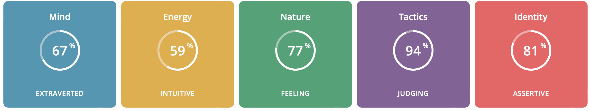
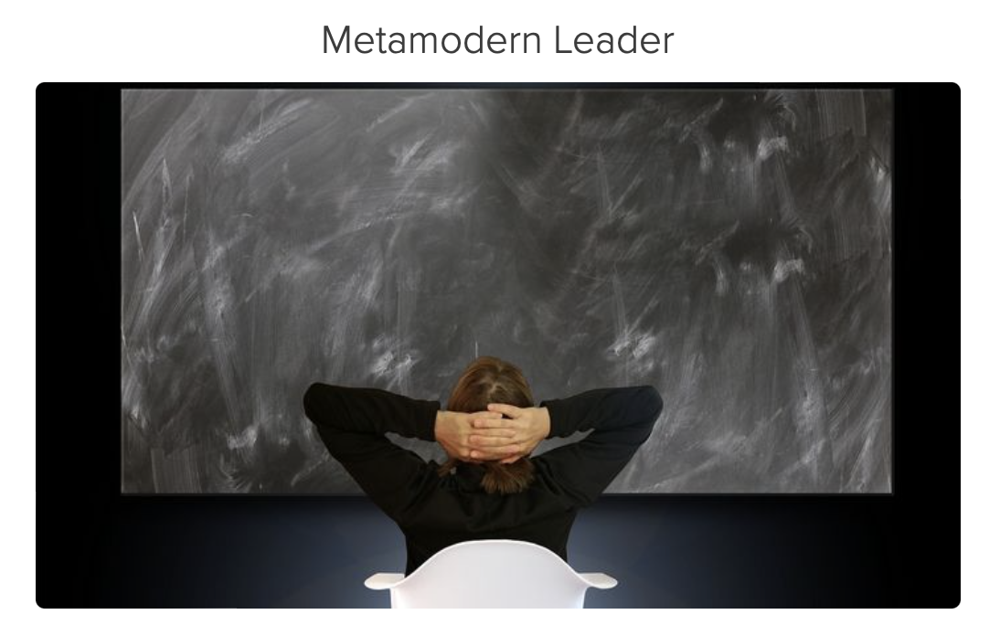

| Test |
Description |
| Myers-Briggs Test |
67% of how I interact with the environment is extraverted. I am more of a social interaction than I am to myself. A gratitude survey expresses “89% of extraverts say they are comfortable verbally expressing gratitude when they feel it, compared to 67% of Introverts”. I’m the same. I like to express my gratitude towards someone as soon as I feel it.
My mental energy is from my views on what’s right and what’s wrong. I love to focus on hidden meaning and what the future holds for me therefore I possess 59% intuitive. Jean Luc Picard, Star Trek: The Next Generation explicits “Things are only impossible until they’re not” which is my mentality. There are always way to turn things from impossible to possible. I may fail, but it will provide me more success to grow.
With my close ones I love to be with them in every feeling and I also love to express my feelings to them. 77% of my nature is from my feelings. “For those with the feeling trait, decisions tend to be based on the well-being of others” (16 personalities, para 11) illustrates the the kindness that I feel. For my loved ones, I am able to do anything for them to be happy.
94% of me is judging to value the clarity, predictability and closure in preferring structure and planning. I love to planned and organised in my decision making. I judge only on the basis of getting better at things, exploring new things and getting to know one better. I love having goals that make me more motivated in what I do like a self motivation survey evokes “66% of those with the judging trait say they set specific goals that they hope to accomplish each day, compared to 34% of those with the prospecting trait.”
81% of me is assertive due to being resistant to stress. In any stress moments, I try my best to remain calm and positive. I am self assured that everything that happens will be for the best for me and even if it isn’t there will be lots to learn from them. I “learn lessons from [my] personal [history], but they see little purpose in entertaining the same regrets again and again” My identity is to always to be confident in a calm manner.
|
| 
|
| Test |
Description |
| Learning Styles Test |
33.2% of me contains the pragmatist style as I love doing new things each day. Doing different things each day helps me focus on a different variety of skills to enhance my knowledge and skills. Solutions to many problems arise when I keep trying different things.
26.3% of me equally involves the theorist and reflector style. The theorist likes to think through problems in a logical manner. Working through things in a methodology way can help make assumptions and reach to a new theory.
It’s not always to be at front and be active on participating in everything without reflecting back. Before doing things I love to think before I do it and each day I reflect on what I have done during the day and what I can improve the next day therefore my most favourite is the reflector style.
My least style is the activist style(14.3%) as I am not easily an open communicator in front of a group that I don’t as much as well.
|
| |
| Test |
Description |
| Leadership Style Test |
“Metamodern Leader is [me] enjoy[ing] being on the innovative edge, pushing leadership and your organisation forward.” (Leadership styles, para 1). Metamodern leader has a strong imagination and has a willingness to take calculated risks to lead to a brighter future. I take on risks because without taking them on as an individual we’ll never grow and to have a bright future an individual should grow. Another aspect of me is to connect with myself which I do when I am free but definitely before I finish my day and I am a very social people and happy to share my role to others in need for it.
|
|  |
What do the results of these tests mean for me?
The results reflects my views and thoughts on my morals to an extent. For example, I can say that I would be a metamodern leader according the leadership styles test as I take the courage to take risks, take a step back to observe my doings, and encounter other individuals. These results helps me reflect on myself and encourage me to change myself into a better person.
However, there is an aspect where these results don’t reflect me at all. Thus, these tests don’t mean too much to me. Basing my personality basis on a few questions is not a way for a human being to get judged or viewed no matter what the results illustrates. In the learning styles test, even when I provided honest answers I had 33.2% of the pragmatist style where I would have reflected myself more of a reflector style than a pragmatist style.
How do I think these results may influence your behaviour in a team?
I will take out the benefits of these tests to help me perform better in a team and improve on other skills that require more from me. To be flexible with my team members, I will foster the good qualities of me like being resistant to stress and being patient with them. I will always lack in a few qualities but I can always have a go in improving them to the best I can. Therefore, those qualities that are valuable I will always put my 100% best to improve to my 200%. It may involve taking risks, but if I'd fail once I will grow double.
How should I take this into account when forming a team?
When forming a group, I would account for others’ skills that I lack in the present. We aren’t perfect, each individual is different. Therefore, one individual may have good skills that the other will not have. Nevertheless, when forming a group choosing a group that fills the lack in an individual will empower one strong individual. We will be able to accomplish many tasks through the help of every team member’s contribution and skills. If one gets stuck, another team member is there to help solve the problem. A good team is successful when they fill in each other’s incapabilities to one huge success.